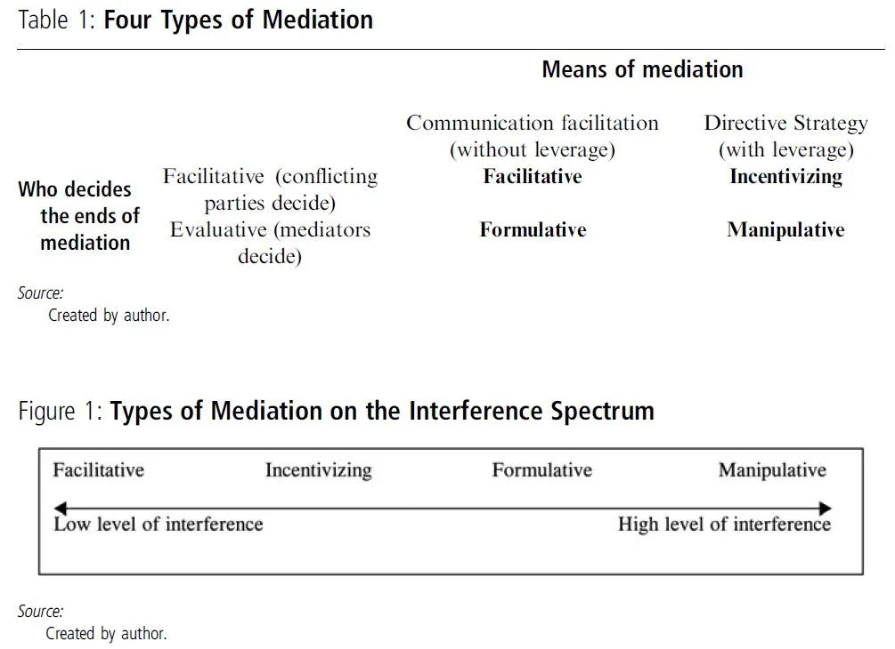

收录于合集

作品简介
作者： 广野美和（Hirono Miwa）是日本立命馆大学国际教养学部和国际关系研究科副教授。研究兴趣为中国的国际关系、中国的维和行动及人道主义援助、中国的公民社会和中日关系等领域。
编译： 徐一凡（国政学人编译员，日本立命馆大学）
来源： Hirono, M. (2019). China’s Conflict Mediation and the Durability of the Principle of Non-Interference: The Case of Post-2014 Afghanistan. The China Quarterly, 239 , 614–634.http://doi.org/10.1017/S0305741018001753
内容提要
中国在冲突调解方面的努力是对不干涉原则经久性的重要考验。通过分析 2014 年后中国在阿富汗进行调解努力的途径和方法, 本文发现中国的行为表明, 虽然中国进行中等程度内政干涉, 但主要还是在与东道国政府达成共识的基础上进行的。这是由中国采取的两种调解形式导致的。在双边背景下, 中国的调解采取 “激励式调解” 的形式, 其经济实力和全方位的外交政策为交战各方提供了动机或杠杆以使后者来到谈判桌上, 但也让交战各方制定他们自己的和平谈判路线图。在多边背景下, 中国有时参与 “主导式调解”, 和平谈判的路线图是由调解者而不是争议各方来制定的。
【译者注】
阿富汗的命运应当由阿富汗人民决定，坚持“阿人主导、阿人所有”原则，是实现阿富汗和平与重建的唯一途径。我们呼吁包括塔利班在内的阿各派以国家和人民利益为重，抓住历史性机遇，启动阿人内部谈判，早日达成各派都能接受的未来政治架构，携手推开和解的大门。 ——国务委员兼外交部长，王毅
本文对“leverage”的翻译采取了“杠杆”的直译方法。在本文中，中国对阿富汗的“经济杠杆（economic leverage）”具备多种涵义，包括中国的经济渗透力影响力，作为手段的经济实力和作为介质经济实力等等。但正如作者在文中所述，即便中国无意主动使用其经济影响力，中国客观存在的经济实力也会发挥“不自觉（unintentional）”的作用，如“杠杆”一般“撬开”阿富汗冲突各方，使后者愿意接受中国的调解，因此将leverage译为“杠杆”。
文章导读
关注中国对外政策的评论家们已经注意到自2000年代以来，中国以不干涉原则为基础的外交已经发生了变化。例如，中国赞成所有联合国安全理事会依据联合国宪章第七章通过的关于维和的决议。中国是在东道国同意后才如此行事的，因而能够据此宣称其遵守了不干涉原则。然而，中国也开始在诸如阿富汗、以色列- 巴勒斯坦、缅甸和南苏丹等地的冲突调解中直接与叛乱团体交涉。中国的调解努力是否说明中国外交在不干涉原则之上又增添了新维度呢？
通过分析中国2014年后在阿富汗内战中调解的途径和方法，本文旨在评估中国参与冲突的行为是否违反了不干涉原则。选择阿富汗内战为个案研究是因为塔利班对和平对话的温和转变可被视为中国调解的一个成果。通过聚焦于调解的两个要素，本文将建立一个能够联结不干涉原则和多种形态调解的分析框架。第一个要素是调解者关于谁将决定和平路线图的途径。当这一路线图来自于调解者的观念，那么该路径就可以被解释为是干涉的一种形式。第二个调解要素是运用促使交战各方回到谈判桌或解决争端的 杠杆 （leverage）。杠杆相当于“强制性”调解（“coercive” mediation），即对不干涉原则的违反。
本文发现中国的外交行为体现出其与东道国达成共识情况下对冲突地区的中等级别建设性介入。 这是由于中国采取了两种形式的调解导致的。在双边背景下，中国的调解采取 “激励式调解” （incentivizing mediation）的形式，其经济实力和全方位的外交政策为交战各方提供了动机或杠杆以使后者来到谈判桌上，同时也支持交战各方制定他们自己的和平谈判路线图。在多边背景下，中国有时参与 “主导式调解” （formulative mediation），和平谈判的路线图是由调解者而不是争议各方来制定的。
本文首先回顾了冲突调解的有关文献以建立一个分析框架。这一分析框架有助于评估中国采取的不同调解途径，以及其所体现的不同的介入级别。随后，本文审视了中国2014年后在阿富汗内战中的调解努力。
01
不干涉与调解
正如本特辑的引言文章所讨论的，现有文献并没有就不干涉原则的定义达成共识。广义地讲,干涉可以包括建议（recommendations）、事实调查（fact- finding missions）和讨论（discussions），而这些都是调解（mediation）的一部分。狭义地讲，干涉并不包括上述的建议等方式，而是指诸如军事干预和制裁（military intervention and sanctions）等手段。在审视各种各样的调解是如何与不干涉原则相关联时，单单依靠某一个定义来判断中国的调解是否为干涉并无多大帮助，因为我们会不可避免地从“干涉的定义”得出中国的调解是否是干涉的结论。 相较之下，基于干涉概念的光谱概念化某一特定形式的调解会更有帮助。 这一光谱从一端的不干涉（甚至都称不上“讨论”）延展到另一端的完全干涉（包括军事干预和制裁）。在这两极之间的是低、中、高不同级别的多种多样的调解形式。联合国对于不干涉原则中的一项权利的描述可以帮助我们将本文中的“完全干涉”概念化。不干涉被描述为“各国都享有在不受任何形式的外来干涉、干预、顛覆、圧力或威胁的情況下，按照自己人民的意志，自由确定自己的政治、经济、文化和社会制度、发展其国际关系和对其自然资源行使永久主权的主权权利和不可分割的权利。”
调解通常被定义为 “一种整体上促进性的、非强制的和非约束性的社会行为” 。调解与仲裁（arbitration）不同，后者的结果会被法律或国家的权力强制执行，而调解是不可被强制执行的。只有在交战各方都同意让步或缔结政治协定的时候，调解才是有效的，而冲突双方调解意愿是在调解方提出的建议下达成的。我们今天看到的大多冲突都涉及一个主权国家作为其交战的一方，因而在解决冲突层面，非强制性的调解是一种比更强制性的仲裁更加合适的方法。这意味着， 调解，究其定义，是干涉的最低级别 ，采取“建议、事实调查和讨论”的形式。然而，如果调解者主导某一他们相信可以解决冲突的方案，且拥有对交战各方的重大权势和社会影响，那么本应非强制性的调解就会变得具有强制性。换句话说， 调解也可以成为一种高级别的干涉。
1.谁决定调解结果？
——促进式路径和评估式路径
现有文献基于何方引导调解之结果，指出了调解的两种途径。本质上看，如果冲突方主导了调解结束的决定，那么调解就是 促进式 （facilitative）调解；反之，如果调停方主导了这一决定，那么调解就是 评估式 （evaluative）调解。促进式调解者不应该在促进交战各方就解决冲突而进行讨论之外有任何其他行为。调解方“掌控进程，而冲突方掌控结果”。这种形式的调解构成最低级别的干涉，因为调解人并不对和平进程有实质性贡献，而只是关注于扮演沟通管道的角色。与其相反，评估式调解者会评定一个解决方案的长处、短处、风险、裨益和损害，或者预估和平对话可能的成果。因此，他们“引导一些或全部的调解成果”。评估式调解者“在争端的内容和过程中都有利益相关，并且他们在寻求争端解决当中利用情况判定（case assessment）对双方发挥相当程度的影响力”。诸如此类的影响力可以导致对调解人意见的强加，构成干涉光谱中接近高的一极。
在评估性调解中，被引导的结果的性质是一个关键问题。调解结果能否对交战各方都保持中立这一问题的答案也会影响到调解与不干涉原则间关系的程度与性质。曾担任科索沃和亚齐冲突调解人的马尔蒂·阿赫蒂萨里（Martti Ahtisaari），声称任何调解人都不可能做到中立。他说：“在和平进程的问题和内容上，我自己从来就不是中立或不偏不倚的。在谈及中立性和公正性的时候，一方面一定要区分问题，另一方面要区分参与各方。很有可能在不选边站的情况下在特定议题上也可以有清楚的立场。”
是否能在“特定议题上有清楚的立场”而不妨碍交战各方观点的问题已经超出了道德判断的范围。在某种意义上，在冲突的核心议题上采取立场有可能将调解人至于某一交战方的阵营之中，这种行为对不干涉原则有着重大影响。其可能与否同样关联于在特定议题上的清楚立场源于何处，以及这一立场会如何影响交战各方以及冲突区的民众。特别是，诸大国“在特定议题上采取的立场”很可能是他们国家利益的衍生品。比如，美国在中东和平进程的调解努力“很大程度上是由美国在该区域的战略利益所驱动的”。中国调解的大多国家都是中国国家利益攸关的地区：邻国，诸如阿富汗、缅甸和柬埔寨；资源丰富国，诸如南苏丹；以及中国需要贡献于该国和平以向国际社会证明其重要性的国家，诸如叙利亚、苏丹以及南苏丹。这就引出了一个问题，即中国的调解在何种程度上是由战略和国家利益驱动的，以及这样的利益如何影响中国的中立性。简而言之， 在对中国调解的实证研究当中，我们需要审视如下几个问题：第一，中国是一个促进式调解者（facilitative mediator），能够让交战各方决定调解的结果，还是一个评估式的调解者，自己决定调节的结果？第二，如果中国属于后者，调解的结果如何于中国在相关问题上的立场相联系？
2.调解的手段为何？
——沟通促进还是指导战略
如上所述，调解被定义为一种促进性的行为。因此，调解的常规方式为“沟通促进”（communication facilitation）。然而，调解者有时是强制性的，这取决于他们想多有效地改变交战各方的行为。这一更加强制性的调解方式被称为“指导战略” （directive strategy）即调解人运用 “萝卜加大棒” 来说服交战各派接受特定的建议或方案。这一手段可以被视为是高度干涉的指标，因为其使得交战各派不能自由地做出他们自己的决定。
大国和中等强国会运用不同的调解方式。中等强国倾向于运用“对话与沟通的低姿态战略”（ low-profile strategies of dialogue and communication），不会对对手构成威胁。与其相对，现有文献表明大国倾向于在调解中“以物质实力运用萝卜加大棒”。
“萝卜加大棒”，即奖励和强制性手段并行的手段，与不干涉原则高度关联，因为在另一主权国家运用这类权力有悖于“一个国家自由决定其自己的政治、经济、文化和社会制度的权利”。如果中国的调解努力利用了这种手段，那就表明中国的调解构成了一个相当高等级的干涉。
3.四种调解方式以及干涉等级

图表1总结了不同调解途径的组合以及调解杠杆如何导致不同类型的调解。 这四种调解类型是促进式调解、激励式调解、主导式调解和操纵式调解。这些类型的调解，依照顺序，可以被理解为按照干涉光谱从低到高排列。
促进式调解 中，调解者并不向交战各方提供关于结果的任何建议，而是仅仅发挥沟通管道的作用。促进性的调解者在预见沟通结果方面只发挥最低限度作用。调解者在谈判过程中并不利用任何杠杆。这一途径构成最低级别的干涉。
激励式调解 中，调解者集中于向争端各方提供激励以鼓动他们来到谈判桌前，但调解者并不提供一个特定的解决方案。调解者可以鼓动并促进沟通，但是将和平后的潜在裨益作为一种参与冲突解决的激励。这一方法在交战各派寻求经济发展的机会时会行之有效。冲突调解的文献认为调解者在调解过程中故意运用杠杆。然而，即便调解者无意运用杠杆，更强大的调解者的影响力也会被争端各方解释为杠杆。当大国拥有将巨大投资和发展机会带给交战各方的意愿时，这样的机会就发挥一种激励的作用，鼓动交战方来到谈判桌前。这一途径构成次低级别的干涉。
主导式调解 允许调解者为和平对话建立蓝图。主导性的调解者“组织冲突方进行谈判，创造暂时的限制条件，再定义相关问题并建立关注点和/或提出备选方案，特别是在谈判陷入僵局的时候”。然而，主导性的调解者并不应用杠杆。他们代表争端各方规划解决方案，但是他们并不利用杠杆来执行他们的方案，而是依靠合法正当性。调解人也并不必提供全方位的和解蓝图。这一途径构成次高级的干涉，因为解决冲突的路线图来自于调解人他们自己。
操纵式调解 是最具侵入性的干涉，调解者主导调解进程的目标并利用杠杆迫使争端各方执行这些目标。操纵性的调解者同样对谈判提供实质性贡献。除主导潜在解决方案的制定之外，调解人利用其地位和杠杆去“操纵各方同意”。操纵式调解人“改变各方”的行为和动力是通过提供激励或下达最后通牒来达到的。这一类型的调解构成最高级的干涉。
02
中国在阿富汗冲突中的调解努力（2014-2017）
911事件后不久，美国主导的对阿富汗的轰炸推翻了自1996年至2001年统治该国的塔利班政权。Hamid Karzai成为了过渡政府的领导人，而塔利班领导人毛拉·奥马尔（Mullah Omar）以及其他高级成员逃亡至阿富汗- 巴基斯坦边境区域，并在此对抗北约领导的驻阿富汗国际维和部队（International Security Assistance Force, ISAF）。2014年时，战争还在继续，但奥巴马总统宣布ISAF撤退以让阿富汗本土的武装力量全面承担起保卫国家的责任。在2014年末，ISAF部队变成了一支规模更小的非战斗部队。
在2001年到2014年的战争之中，中国在阿富汗保持了低姿态。但随着ISAF撤出，中国成为了“一个积极且热情的对塔利班和阿富汗政府和解的支持者”，并且开始在交战方之间展开外交调解。中国在阿富汗的调解努力自2014年10月在北京的伊斯坦布尔进程（也被称为“亚洲之心”）开始，目的是使阿富汗政府和塔利班和解。 自此，中国政府一直通过双边和多边管道努力对交战双方进行调解。 在阿富汗交战双方间进行的直接调解“标志着一个新的开始，在此之前中国更加倾向于通过巴基斯坦间接施加影响”。
在双边背景下，中国政府就和平进程在多个地点分别与阿富汗政府领导人和塔利班进行讨论。在2014年10月的伊斯坦布尔进程之后，塔利班于2014年11月访问北京，希望“拉近伊斯兰埃米尔国（即塔利班）与中国的立场”。随后，中国开始频繁会见阿富汗政府官员和塔利班。早在2014年12月15日，中国领导人就在阿斯塔纳上海合作组织会议上会见了阿富汗总理阿卜杜拉（Abdullah）。不久后，中国外交部长王毅就在2015年2月访问了喀布尔，而塔利班代表也在同年5月访问了北京。在2015年12月，中国领导人再一次会见阿卜杜拉，后者参加了在郑州举办的第十四届上合组织成员国总理会议。双方又在2016年5月于喀布尔的另一个场合再一次见面。在2016年7月，由塔利班在卡塔尔的政治代表Abbas Stanakzai率领的代表团访问了北京。一位塔利班官员评论道：“我们知会了中国官员有关入侵部队在阿富汗的占领以及他们对阿富汗人民的暴行的相关情况……我们希望中国领导层帮助我们在世界平台上提出这些问题并帮助我们从占领军下获得自由”。
同样在多边背景下，自2014年以来中国已经在多个机构和制度下调解阿富汗政府和塔利班的冲突。前面提到的伊斯坦布尔进程就是其中之一。其他多边平台包括阿富汗四方会谈（Quadrilateral Coordination Group, QCG）、上合组织、俄罗斯—中国—巴基斯坦三边对话。在2016年1月，中国成为了阿富汗四方会谈的一员，其全部成员包括中国、阿富汗、巴基斯坦和美国。这四国均认为阿富汗的和平与和解进程必须要是“阿人主导、阿人所有”（ Afghan-led and Afghan-owned）的。进一步的发展可以从中国在阿富汗和巴基斯坦间的调解中看到。巴基斯坦是巴基斯坦- 阿富汗边境地区反恐议题中的关键国家。在北京，中国于2017年12月举办了第一届中国、阿富汗、巴基斯坦三国外交部长会议，而第二届会议将在2018年12月于喀布尔举办。
03
调解路径：中国的调解是促进式的还是评估式的？
这一部分试图审视中国在其外交部所宣布的阿富汗问题四点目标的基础上所采取的调解路径。这些目标是： “阿富汗主导、阿富汗所有”的和解进程；包容性政治和解；提升反恐能力以及打击极端恐怖势力 ，同时注重巴基斯坦在阿富汗问题中的重要角色；以及 与 美国在阿富汗问题上保持沟通和协调 。
1.“阿人主导、阿人所有”的和解进程
早在2010年起，中国就支持和解进程必须是“阿人主导、阿人所有”，而不是在国际社会施压下完成。作者通过实例证明，中国的调解大多都是在此指导之下进行的，这显示出其基本的调解路径是促进式的，而非评估式的。总之，“阿人主导、阿人所有”的调解原则证明了 中国的调解总体上是促进式的 。
2.包容性的政治和解
中国的包容性调解政策反映出促进式的调解路径。但是，中国对究竟谁才是塔利班没有一个清晰的认识，这使得促进式路径的基本前提—交战“方”的存在- 变得问题重重。这意味着中国的促进式调解路径至多也只是含糊不清的。作者认为， 即便中国的基本立场是促进式的调解路径，从塔利班某些派系的视角来看，中国的调解只是对内政的介入 。
3.反恐怖主义与巴基斯坦
作者认为，中国在阿富汗-巴基斯坦关系背景下的反恐方式较为模糊，因此 很难评定其到底是促进式还是评估式途径。 但是通过中国最近对巴基斯坦的敲打以及未来中国投资所需要的中巴经济走廊的稳定表明在调节进程中，阿富汗和巴基斯坦并无决定议事日程完全自主。如果中国想采取一个评估式的调解路径，那么中国会需要就中巴经济走廊的反恐议题对巴基斯坦提出一些明确的方案。
4.对美国的沟通与协调
中美两国都与阿富汗政府进行了合作。而且，作为中国在阿富汗存在的一个结果，中美成功使得塔利班代表参加了2016年1月的阿富汗四方会谈。即便这并没有导致阿富汗政府和塔利班达成协议，第一届四方会谈展现出中美通过邀请交战双方到谈判桌上的行为为促进式调解创造了基础。然而，和平对话的“路线图”（roadmap）在第二届四方会谈中才得以建立，但只是在与阿富汗政府达成共识的基础上，而不包括塔利班。中美促进谈判的尝试因为塔利班不同意进行和平对话而被限制。从塔利班的视角来看，这是因为四方会谈为和平对话设立了目标，而塔利班并不同意这些目标。 因此，这一“路线图”构成一种评估式的调解途径。
04
调解的手段：中国运用的是沟通促进战略还是指导战略？
作者认为，即使中国没有在调解中运用“萝卜加大棒”策略，但中国为战争受害社会带来的经济潜力意味着中国的存在本身就是其杠杆。作者在同一位熟悉中国- 阿富汗关系的中国外交官的对话中了解到，中国的经济实力在一定程度上吸引了交战各方的注意，诸如阿富汗政府、塔利班和巴基斯坦政府，并且促使他们听从中国的调解。 因此，可以说，在谈判桌上，中国采取了一种沟通战略。但是在更加广义的调解的背景下（这一点从地区的长远发展角度看更重要），中国在调解中采取了一种指导战略。
05
结论
对中国的调解途径和手段的分析表明，在双边背景下，中国采取一种促进式调解路径（facilitative approach），并且在长期条件下间接运用经济杠杆于阿富汗政府和塔利班的调解中。根据本文中建立的分析框架，中国的调解类型可以被理解为一种“激励式调解”。中国的经济力量可以被冲突双方视为一个重大机遇。中国的投资和商业活动可以带给遭到战争破坏的社会对繁荣未来的希冀。即使中国在调解过程中并不刻意地在谈判桌上利用其经济力量，但如果一个交战方正在寻求经济机会，那么在交战各派眼中，中国的经济力量就具有非自觉的（unintentional）奖赏力量。激励式调解构成中等程度的介入。
然而，在多边背景下，中国的调解采取了一种促进式和评估式结合的路径。中国在多边平台上通过以“阿人主导、阿人所有”的调解原则和包容性和平对话的形式来采取一种促进式路径的同时，构成了一种评估式的路径，例如中国在俄- 中- 巴三边对话中对解除对塔利班制裁的讨论、在巴基斯坦和阿富汗间关于反恐手段的调解、以及在没有塔利班参与的情况下在四方会谈框架下建立和平对话的路线图等。这一混合路径意味着中国在多边背景下的调解构成一种“主导式调解”，展现出一种中等程度的建设性介入。
本文论证了中国实施不干涉原则的途径正在发生变化。与相关文献中的设想不同，调解行动本身并不能证明这一变化。这一变化主要源自三个因素：中国的经济潜力本身就可以被视为一种杠杆，中国对阿富汗、塔利班、巴基斯坦和美国的全方位外交政策，以及中国对制裁塔利班无用的笃信。
最后，作者指出，中国对冲突的调解带来了新的挑战，即遵守不干涉原则究竟意味着什么。中国在实践中维持这一规则的程度取决于其如何处理和塔利班的关系。如果阿富汗政府和塔利班都同意调解，那么中国就可以采取一种促进式路径。否则，从反叛组织的角度来看，中国的行为就不是那么的积极了。此外，即使是确认反叛组织内部的派别都是困难的，与他们保持良好的关系几乎就是“不可能完成的任务”了。即便中国积极支持塔利班和阿富汗政府间的和解对话，中国在多大程度上能成功地维持和塔利班的关系也取决于塔利班自身的形势，以及中国如何处理自身意愿和塔利班对于中国的考量间的认知差异。
责编 | 柯孜凝 姚寰宇
排版 | 韩柯 王国伟
文章观点不代表本平台观点，本平台评译分享的文章均出于专业学习之用, 不以任何盈利为目的，内容主要呈现对原文的介绍，原文内容请通过各高校购买的数据库自行下载。
好好学习，天天“在看”